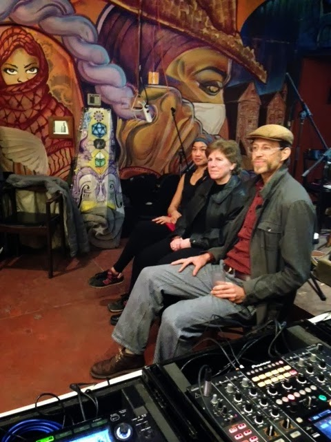

Give A Crap Campaign
"What would you do if you could not use the restroom for the remainder of the day?"
This was a thought-provoking question posed by Dr. Charlotte Smith Ph.D, professor and water quality specialist during the panel portion of the Sanisalud Community Art Fair hosted on March 2nd at La Pena Cultural Center... Read more
For those of you who came out to support, we cannot thank you enough. If you were unable to make it and still want to show that you Give a Crap you can donate with the button below:
It is time to give a crap...about crap and the 2.5 billion people worldwide who lack access to a toilet. The Give A Crap Campaign seeks to create a space where creative individuals in our community are encouraged to share their work and be part of a local and global community that bridges art, advocacy and technological innovation...
Get involved by donating or come to a fun event in the San Francisco Bay Area.
Past Events
Sunday, March 2, 2014, 6 PM
Give A Crap Community Art Fair La Peña Cultural Center, 3105 Shattuck Ave. Berkeley, CA 94705
Join us for Live Music, Food, and Silent Auction
A highlight of the evening will be a special interdisciplinary panel exploring how artists, scientists, and activists inspired by poop are sharing creativity and knowledge across different disciplines.
Featured Panelists:
Dr. Charlotte Smith is a professor of Environmental Health Sciences at UC Berkeley.
Full BioLauren Elder is an Environmental Artist, a CCA Adjunct Professor and an organizer of community projects.
Full BioAileen Suzara is a chef, educator, and environmental justice advocate
KQED InterviewNikolas Wulff Bertulis is visiting faculty in Urban Studies and Design and Technology at the San Francisco Art Institute. His work draws from performance research, novel ecosystems and social technology.
BioSaturday, February 18, 2012, 7 PM
Community Art Fair - A Benefit for Monte Fresco, Nicaragua
Everybody Bikes Gallery,
1288 15 Ave., San Francisco, CA
Live Music, Food, Art, Silent Auction, Craft Sale
Featuring art and handmade goods by local crafters and Nicaraguan artisans
Saturday, August 27, 2011, 7-9 PM
Greenmeadow Community Room in Palo Alto, CA
A night of learning, culture, advocacy, and fiesta
Information, Salsa Dancing, Traditional Food, Nicaraguan Crafts Sale/Auction